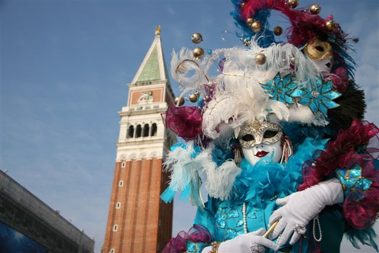

Le carnaval de Venise
Le carnaval de Venise est une fête traditionnelle italienne remontant au Moyen Âge. Il commence dix jours avant le mercredi des Cendres et se poursuit jusqu'au mardi gras. Connu pour ses costumes et ses masques, il attire des foules considérables.
